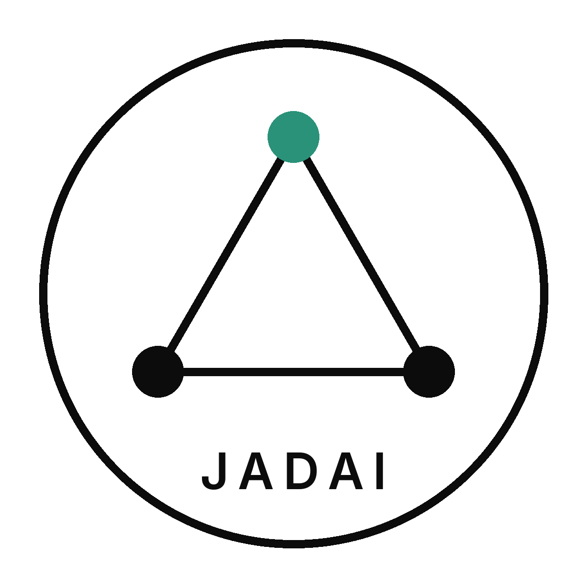
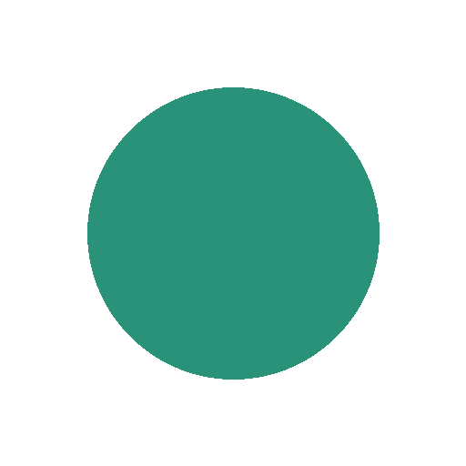

Abierto
JADAI Conecta
Recibimos tu idea y la conectamos con quien puede revisarla.


Santa Cruz de la Sierra, BoliviaPara que ninguna buena idea de IA en Bolivia se quede sola.
Estudiantes y docentes de distintas universidades validan proyectos de IA y los ayudan a crecer. Comunidad sin fines de lucro, de Santa Cruz de la Sierra para el resto de Bolivia.
Joint Academic Development in Artificial Intelligence. Desarrollo Académico Conjunto en Inteligencia Artificial. «Conjunto» es trabajar entre varios, nunca solo.
Revisión
Una revisión corta, entre universidades, con devolución por escrito.
Un resumen corto: el problema, para quién es y el método.
La red te junta con un docente y con un par de otra universidad.
Miran el trabajo con las cuatro preguntas de abajo.
Qué mejorar, el siguiente paso y a quién conviene acercarte.
¿Está claro el problema y para quién es?
¿El método es adecuado y se puede repetir?
¿Es viable con los datos y recursos que existen?
¿Se usa la IA de forma ética y responsable?
Es mentoría entre pares de la red.
No reemplaza el aval ni la certificación oficial de ninguna universidad.
La red
Conecta es el núcleo. Lo demás acompaña esa revisión.
Abierto
Recibimos tu idea y la conectamos con quien puede revisarla.
Abierto a invitaciones
Cuando otra comunidad invita: personas, mentoría o difusión. Sin dinero ni auspicio.
Convocatoria abierta
Una persona por universidad, para traer proyectos y docentes.
Próximamente · Fase 2
Un espacio propio para mostrar los proyectos que pasen por la revisión.
Primeros aliados
La invitación está abierta a universidades, la Alcaldía, la Gobernación y empresas.
Quiénes la iniciaron
Licenciatura en Innovación Digital e Inteligencia Artificial
Universidad Central de Bolivia
Ingeniería en Inteligencia Artificial
Universidad Católica Boliviana
Participa
El estudiante trae la idea. Docentes, embajadores y aliados hacen posible la revisión.
Cualquier universidad y cualquier nivel.
Validar proyectoSé parte del comité fundador de revisores.
Quiero revisarLa cara de la red en tu campus.
Quiero ser embajadorProfesionales, instituciones u otras comunidades.
ConversemosContacto
Elige tu rol y ajusta el mensaje.